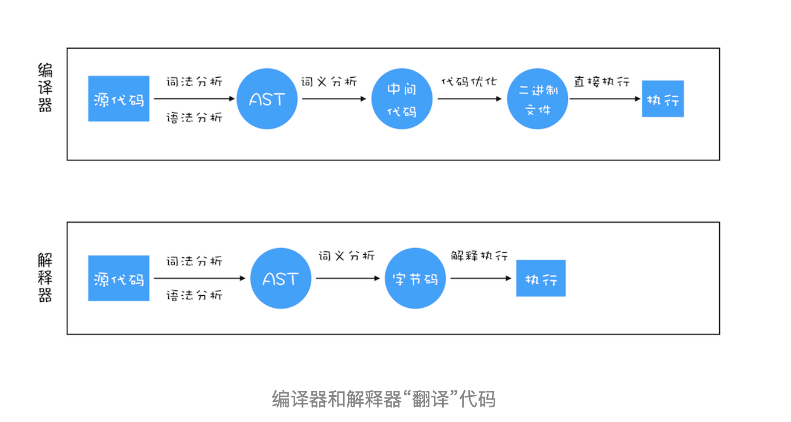

<!DOCTYPE html>


<html lang="zh">


<head>
  <meta charset="utf-8" />
   
  <meta name="keywords" content="hexo blog" />
   
  <meta name="description" content="young blog write my world" />
  
  <meta name="viewport" content="width=device-width, initial-scale=1, maximum-scale=1" />
  <title>
    V8引擎内存模型 |  young blog write my world
  </title>
  <meta name="generator" content="hexo-theme-ayer">
  
  <link rel="shortcut icon" href="/favicon.ico" />
  
  
<link rel="stylesheet" href="/dist/main.css">

  
<link rel="stylesheet" href="https://cdn.jsdelivr.net/gh/Shen-Yu/cdn/css/remixicon.min.css">

  
<link rel="stylesheet" href="/css/custom.css">

  
  
<script src="https://cdn.jsdelivr.net/npm/pace-js@1.0.2/pace.min.js"></script>

  
  

  

</head>

</html>

<body>
  <div id="app">
    
      
    <main class="content on">
      <section class="outer">
  <article
  id="post-V8引擎内存模型"
  class="article article-type-post"
  itemscope
  itemprop="blogPost"
  data-scroll-reveal
>
  <div class="article-inner">
    
    <header class="article-header">
       
<h1 class="article-title sea-center" style="border-left:0" itemprop="name">
  V8引擎内存模型
</h1>
 

    </header>
     
    <div class="article-meta">
      <a href="/2020/09/30/V8%E5%BC%95%E6%93%8E%E5%86%85%E5%AD%98%E6%A8%A1%E5%9E%8B/" class="article-date">
  <time datetime="2020-09-30T06:35:19.000Z" itemprop="datePublished">2020-09-30</time>
</a> 
  <div class="article-category">
    <a class="article-category-link" href="/categories/%E6%B5%8F%E8%A7%88%E5%99%A8/">浏览器</a>
  </div>
  
<div class="word_count">
    <span class="post-time">
        <span class="post-meta-item-icon">
            <i class="ri-quill-pen-line"></i>
            <span class="post-meta-item-text"> Word count:</span>
            <span class="post-count">6.4k</span>
        </span>
    </span>

    <span class="post-time">
        &nbsp; | &nbsp;
        <span class="post-meta-item-icon">
            <i class="ri-book-open-line"></i>
            <span class="post-meta-item-text"> Reading time≈</span>
            <span class="post-count">22 min</span>
        </span>
    </span>
</div>
 
    </div>
      
    <div class="tocbot"></div>


  
    <div class="article-entry" itemprop="articleBody">
       
  <h2 id="栈和堆"><a href="#栈和堆" class="headerlink" title="栈和堆"></a>栈和堆</h2><h3 id="JavaScript是什么类型的语言"><a href="#JavaScript是什么类型的语言" class="headerlink" title="JavaScript是什么类型的语言"></a>JavaScript是什么类型的语言</h3><p>每种编程语言都有内建的数据模型，但它们的数据类型常有不同之处，使用方式也有不同。比如C，Java在使用变量之前，先要申明好数据类型，比如如下C代码：</p>
<figure class="highlight plain"><table><tr><td class="gutter"><pre><span class="line">1</span><br><span class="line">2</span><br><span class="line">3</span><br><span class="line">4</span><br><span class="line">5</span><br><span class="line">6</span><br><span class="line">7</span><br></pre></td><td class="code"><pre><span class="line">int main()</span><br><span class="line">&#123;</span><br><span class="line">   int a &#x3D; 1;</span><br><span class="line">   char* b &#x3D; &quot; 极客时间 &quot;;</span><br><span class="line">   bool c &#x3D; true;</span><br><span class="line">   return 0;</span><br><span class="line">&#125;</span><br></pre></td></tr></table></figure>

<p>上述代码声明变量的特点是：在声明变量之前需要先定义变量类型。我们把这种在使用之前就需要确认其变量数据类型的称为<strong>静态语言。</strong></p>
<p>相反地，我们把在运行过程中需要检查数据类型的语言称为<strong>动态语言</strong>。比如我们所讲的 JavaScript 就是动态语言，因为在声明变量之前并不需要确认其数据类型。</p>
<p>虽然 C 语言是静态，但是在 C 语言中，我们可以把其他类型数据赋予给一个声明好的变量，如：</p>
<figure class="highlight text"><table><tr><td class="gutter"><pre><span class="line">1</span><br></pre></td><td class="code"><pre><span class="line">c = a</span><br></pre></td></tr></table></figure>

<p>前面代码中，我们把 int 型的变量 a 赋值给了 bool 型的变量 c，这段代码也是可以编译执行的，因为在赋值过程中，<strong>C 编译器会把 int 型的变量悄悄转换为 bool 型的变量</strong>，我们通常把这种偷偷转换的操作称为隐式类型转换。而支持隐式类型转换的语言称为弱类型语言，不支持隐式类型转换的语言称为强类型语言。在这点上，C 和 JavaScript 都是弱类型语言。</p>
<p>对于各种语言的类型，你可以参考下图</p>
<p></p>
<h3 id="JavaScript数据类型"><a href="#JavaScript数据类型" class="headerlink" title="JavaScript数据类型"></a>JavaScript数据类型</h3><p>现在我们知道了，JavaScript 是一种弱类型的、动态的语言。那这些特点意味着什么呢？</p>
<ul>
<li><strong>弱类型</strong>，意味着你不需要告诉 JavaScript 引擎这个或那个变量是什么数据类型，JavaScript 引擎在运行代码的时候自己会计算出来。</li>
<li><strong>动态</strong>，意味着你可以使用同一个变量保存不同类型的数据</li>
</ul>
<p>那么接下来，我们再来看看 JavaScript 的数据类型，你可以看下面这段代码：</p>
<figure class="highlight js"><table><tr><td class="gutter"><pre><span class="line">1</span><br><span class="line">2</span><br><span class="line">3</span><br><span class="line">4</span><br><span class="line">5</span><br><span class="line">6</span><br></pre></td><td class="code"><pre><span class="line"><span class="keyword">var</span> bar</span><br><span class="line">bar = <span class="number">12</span> </span><br><span class="line">bar = <span class="string">&quot; 极客时间 &quot;</span></span><br><span class="line">bar = <span class="literal">true</span></span><br><span class="line">bar = <span class="literal">null</span></span><br><span class="line">bar = &#123;<span class="attr">name</span>:<span class="string">&quot; 极客时间 &quot;</span>&#125;</span><br></pre></td></tr></table></figure>

<p>从上述代码中你可以看出，我们声明了一个 bar 变量，然后可以使用各种类型的数据值赋予给该变量。</p>
<p>在 JavaScript 中，如果你想要查看一个变量到底是什么类型，可以使用“typeof”运算符。具体使用方式如下所示：</p>
<figure class="highlight js"><table><tr><td class="gutter"><pre><span class="line">1</span><br><span class="line">2</span><br><span class="line">3</span><br><span class="line">4</span><br><span class="line">5</span><br><span class="line">6</span><br><span class="line">7</span><br><span class="line">8</span><br><span class="line">9</span><br><span class="line">10</span><br><span class="line">11</span><br><span class="line">12</span><br></pre></td><td class="code"><pre><span class="line"><span class="keyword">var</span> bar</span><br><span class="line"><span class="built_in">console</span>.log(<span class="keyword">typeof</span> bar)  <span class="comment">//undefined</span></span><br><span class="line">bar = <span class="number">12</span> </span><br><span class="line"><span class="built_in">console</span>.log(<span class="keyword">typeof</span> bar) <span class="comment">//number</span></span><br><span class="line">bar = <span class="string">&quot; 极客时间 &quot;</span></span><br><span class="line"><span class="built_in">console</span>.log(<span class="keyword">typeof</span> bar)<span class="comment">//string</span></span><br><span class="line">bar = <span class="literal">true</span></span><br><span class="line"><span class="built_in">console</span>.log(<span class="keyword">typeof</span> bar) <span class="comment">//boolean</span></span><br><span class="line">bar = <span class="literal">null</span></span><br><span class="line"><span class="built_in">console</span>.log(<span class="keyword">typeof</span> bar) <span class="comment">//object</span></span><br><span class="line">bar = &#123;<span class="attr">name</span>:<span class="string">&quot; 极客时间 &quot;</span>&#125;</span><br><span class="line"><span class="built_in">console</span>.log(<span class="keyword">typeof</span> bar) <span class="comment">//object</span></span><br></pre></td></tr></table></figure>

<p>执行这段代码，你可以看到打印出来了不同的数据类型，有 undefined、number、boolean、object 等。那么接下来我们就来谈谈 JavaScript 到底有多少种数据类型。</p>
<p>其实 JavaScript 中的数据类型一种有 8 种，它们分别是：</p>
<p></p>
<p>了解这些类型之后，还有三点需要你注意一下。</p>
<p>第一点，使用 typeof 检测 Null 类型时，返回的是 Object。这是当初 JavaScript 语言的一个 Bug，一直保留至今，之所以一直没修改过来，主要是为了兼容老的代码。</p>
<p>第二点，Object 类型比较特殊，它是由上述 7 种类型组成的一个包含了 key-value 对的数据类型。如下所示：</p>
<figure class="highlight js"><table><tr><td class="gutter"><pre><span class="line">1</span><br><span class="line">2</span><br><span class="line">3</span><br><span class="line">4</span><br></pre></td><td class="code"><pre><span class="line"><span class="keyword">let</span> myObj = &#123;</span><br><span class="line">  name:<span class="string">&#x27;极客时间&#x27;</span>,</span><br><span class="line">  update:<span class="function"><span class="keyword">function</span>(<span class="params"></span>)</span>&#123;....&#125;</span><br><span class="line">&#125;</span><br></pre></td></tr></table></figure>

<p>从中你可以看出来，Object 是由 key-value 组成的，其中的 vaule 可以是任何类型，包括函数，这也就意味着你可以通过 Object 来存储函数，Object 中的函数又称为方法，比如上述代码中的 update 方法。</p>
<p>第三点，我们把前面的 7 种数据类型称为原始类型，把最后一个对象类型称为引用类型，之所以把它们区分为两种不同的类型，是因为它们在内存中存放的位置不一样。到底怎么个不一样法呢？接下来，我们就来讲解一下 JavaScript 的原始类型和引用类型到底是怎么储存的。</p>
<h3 id="内存空间"><a href="#内存空间" class="headerlink" title="内存空间"></a>内存空间</h3><p>JS的内存分布也比较简单，如图示：</p>
<p></p>
<p>从图中可以看出， 在 JavaScript 的执行过程中， 主要有三种类型内存空间，分别是代码空间、栈空间和堆空间。</p>
<p>其中的代码空间主要是存储可执行代码的，这个我们后面再做介绍，今天主要来说说栈空间和堆空间。</p>
<h3 id="栈和堆-1"><a href="#栈和堆-1" class="headerlink" title="栈和堆"></a>栈和堆</h3><figure class="highlight js"><table><tr><td class="gutter"><pre><span class="line">1</span><br><span class="line">2</span><br><span class="line">3</span><br><span class="line">4</span><br><span class="line">5</span><br><span class="line">6</span><br><span class="line">7</span><br></pre></td><td class="code"><pre><span class="line"><span class="function"><span class="keyword">function</span> <span class="title">foo</span>(<span class="params"></span>)</span>&#123;</span><br><span class="line">    <span class="keyword">var</span> a = <span class="string">&quot; 极客时间 &quot;</span></span><br><span class="line">    <span class="keyword">var</span> b = a</span><br><span class="line">    <span class="keyword">var</span> c = &#123;<span class="attr">name</span>:<span class="string">&quot; 极客时间 &quot;</span>&#125;</span><br><span class="line">    <span class="keyword">var</span> d = c</span><br><span class="line">&#125;</span><br><span class="line">foo()</span><br></pre></td></tr></table></figure>

<p>前面文章我们已经讲解过了，当执行一段代码时，需要先编译，并创建执行上下文，然后再按照顺序执行代码。</p>
<p></p>
<p>可以看到，普通变量是直接存储在执行上下文中，但是对象变量执行上下文中存储的是堆中的一个内存地址，实际存储该变量的内存空间是堆。</p>
<p>也就是说：</p>
<p>原始类型的数据值都是直接保存在“栈”中的，引用类型的值是存放在“堆”中的。不过你也许会好奇，为什么一定要分“堆”和“栈”两个存储空间呢？所有数据直接存放在“栈”中不就可以了吗？</p>
<p><strong>答案是不可以的。</strong>这是因为 JavaScript 引擎需要用栈来维护程序执行期间上下文的状态，如果栈空间大了话，所有的数据都存放在栈空间里面，那么会影响到上下文切换的效率，进而又影响到整个程序的执行效率。比如文中的 foo 函数执行结束了，JavaScript 引擎需要离开当前的执行上下文，只需要将指针下移到上个执行上下文的地址就可以了，foo 函数执行上下文栈区空间全部回收，具体过程你可以参考下图：</p>
<p></p>
<h3 id="闭包的内存模型"><a href="#闭包的内存模型" class="headerlink" title="闭包的内存模型"></a>闭包的内存模型</h3><p>现在你知道了作用域内的原始类型数据会被存储到栈空间，引用类型会被存储到堆空间，基于这两点的认知，我们再深入一步，探讨下闭包的内存模型。</p>
<figure class="highlight js"><table><tr><td class="gutter"><pre><span class="line">1</span><br><span class="line">2</span><br><span class="line">3</span><br><span class="line">4</span><br><span class="line">5</span><br><span class="line">6</span><br><span class="line">7</span><br><span class="line">8</span><br><span class="line">9</span><br><span class="line">10</span><br><span class="line">11</span><br><span class="line">12</span><br><span class="line">13</span><br><span class="line">14</span><br><span class="line">15</span><br><span class="line">16</span><br><span class="line">17</span><br><span class="line">18</span><br><span class="line">19</span><br></pre></td><td class="code"><pre><span class="line"><span class="function"><span class="keyword">function</span> <span class="title">foo</span>(<span class="params"></span>) </span>&#123;</span><br><span class="line">    <span class="keyword">var</span> myName = <span class="string">&quot; 极客时间 &quot;</span></span><br><span class="line">    <span class="keyword">let</span> test1 = <span class="number">1</span></span><br><span class="line">    <span class="keyword">const</span> test2 = <span class="number">2</span></span><br><span class="line">    <span class="keyword">var</span> innerBar = &#123; </span><br><span class="line">        setName:<span class="function"><span class="keyword">function</span>(<span class="params">newName</span>)</span>&#123;</span><br><span class="line">            myName = newName</span><br><span class="line">        &#125;,</span><br><span class="line">        getName:<span class="function"><span class="keyword">function</span>(<span class="params"></span>)</span>&#123;</span><br><span class="line">            <span class="built_in">console</span>.log(test1)</span><br><span class="line">            <span class="keyword">return</span> myName</span><br><span class="line">        &#125;</span><br><span class="line">    &#125;</span><br><span class="line">    <span class="keyword">return</span> innerBar</span><br><span class="line">&#125;</span><br><span class="line"><span class="keyword">var</span> bar = foo()</span><br><span class="line">bar.setName(<span class="string">&quot; 极客邦 &quot;</span>)</span><br><span class="line">bar.getName()</span><br><span class="line"><span class="built_in">console</span>.log(bar.getName())</span><br></pre></td></tr></table></figure>

<p>简单分析下上述代码的内存模型</p>
<ul>
<li>先创建一个全局的执行上下文，存储有变量函数foo，指向储存函数代码的地址</li>
<li>执行foo函数，创建foo的执行上下文</li>
<li>在编译过程中，遇到内部函数 setName，JavaScript 引擎还要对内部函数做一次快速的词法扫描，发现该内部函数引用了 foo - 函数中的 myName 变量，由于是内部函数引用了外部函数的变量，所以 JavaScript 引擎判断这是一个闭包，于是在堆空间创建换一个“closure(foo)”的对象（这是一个内部对象，JavaScript 是无法访问的），用来保存 myName 变量。</li>
<li>接着继续扫描到 getName 方法时，发现该函数内部还引用变量 test1，于是 JavaScript 引擎又将 test1 添加到“closure(foo)”对象中。这时候堆中的“closure(foo)”对象中就包含了 myName 和 test1 两个变量了。</li>
<li>由于 test2 并没有被内部函数引用，所以 test2 依然保存在调用栈中</li>
</ul>
<p>通过上面的分析，我们可以画出执行到 foo 函数中“return innerBar”语句时的调用栈状态，如下图所示：</p>
<p></p>
<p>当执行到 foo 函数时，闭包就产生了；当 foo 函数执行结束之后，返回的 getName 和 setName 方法都引用“clourse(foo)”对象，所以即使 foo 函数退出了，“clourse(foo)”依然被其内部的 getName 和 setName 方法引用。所以在下次调用bar.setName或者bar.getName时，创建的执行上下文中就包含了“clourse(foo)”。</p>
<p>总的来说，产生闭包的核心有两步：</p>
<ul>
<li><p>第一步是需要预扫描内部函数；</p>
</li>
<li><p>第二步是把内部函数引用的外部变量保存到堆中。</p>
</li>
</ul>
<h2 id="垃圾回收"><a href="#垃圾回收" class="headerlink" title="垃圾回收"></a>垃圾回收</h2><h3 id="调用栈中内存回收"><a href="#调用栈中内存回收" class="headerlink" title="调用栈中内存回收"></a>调用栈中内存回收</h3><p>调用栈中的数据，我们还是通过一段示例代码的执行流程来分析其回收机制，具体如下：</p>
<figure class="highlight js"><table><tr><td class="gutter"><pre><span class="line">1</span><br><span class="line">2</span><br><span class="line">3</span><br><span class="line">4</span><br><span class="line">5</span><br><span class="line">6</span><br><span class="line">7</span><br><span class="line">8</span><br><span class="line">9</span><br><span class="line">10</span><br></pre></td><td class="code"><pre><span class="line"><span class="function"><span class="keyword">function</span> <span class="title">foo</span>(<span class="params"></span>)</span>&#123;</span><br><span class="line">    <span class="keyword">var</span> a = <span class="number">1</span></span><br><span class="line">    <span class="keyword">var</span> b = &#123;<span class="attr">name</span>:<span class="string">&quot; 极客邦 &quot;</span>&#125;</span><br><span class="line">    <span class="function"><span class="keyword">function</span> <span class="title">showName</span>(<span class="params"></span>)</span>&#123;</span><br><span class="line">      <span class="keyword">var</span> c = <span class="string">&quot; 极客时间 &quot;</span></span><br><span class="line">      <span class="keyword">var</span> d = &#123;<span class="attr">name</span>:<span class="string">&quot; 极客时间 &quot;</span>&#125;</span><br><span class="line">    &#125;</span><br><span class="line">    showName()</span><br><span class="line">&#125;</span><br><span class="line">foo()</span><br></pre></td></tr></table></figure>

<p>当执行到第 6 行代码时，其调用栈和堆空间状态图如下所示：</p>
<p></p>
<p>执行到 showName 函数时，那么 JavaScript 引擎会创建 showName 函数的执行上下文，并将 showName 函数的执行上下文压入到调用栈中，最终执行到 showName 函数时，其调用栈就如上图所示。与此同时，还有一个<strong>记录当前执行状态的指针</strong>（称为 ESP），指向调用栈中 showName 函数的执行上下文，表示当前正在执行 showName 函数。</p>
<p>接着，当 showName 函数执行完成之后，函数执行流程就进入了 foo 函数，那这时就需要销毁 showName 函数的执行上下文了。ESP 这时候就帮上忙了，JavaScript 会将 ESP 下移到 foo 函数的执行上下文，这个下移操作就是销毁 showName 函数执行上下文的过程。</p>
<p>你可能会有点懵，ESP 指针向下移动怎么就能把 showName 的执行上下文销毁了呢？具体你可以看下面这张移动 ESP 前后的对比图</p>
<p></p>
<p>从图中可以看出，当 showName 函数执行结束之后，ESP 向下移动到 foo 函数的执行上下文中，上面 showName 的执行上下文虽然保存在栈内存中，但是已经是无效内存了。比如当 foo 函数再次调用另外一个函数时，这块内容会被直接覆盖掉，用来存放另外一个函数的执行上下文。</p>
<p>所以说，当一个函数执行结束之后，JavaScript 引擎会通过向下移动 ESP 来销毁该函数保存在栈中的执行上下文。</p>
<h3 id="堆中内存回收"><a href="#堆中内存回收" class="headerlink" title="堆中内存回收"></a>堆中内存回收</h3><p>在 V8 中会把堆分为新生代和老生代两个区域，新生代中存放的是生存时间短的对象，老生代中存放的生存时间久的对象。</p>
<p>一般有两个回收器，分别为：新生代垃圾回收器（副垃圾回收器）和老生代垃圾回收器（主垃圾回收器）</p>
<p>新生区通常只支持 1～8M 的容量，而老生区支持的容量就大很多了。对于这两块区域，V8 分别使用两个不同的垃圾回收器，以便更高效地实施垃圾回收。</p>
<ul>
<li>副垃圾回收器，主要负责新生代的垃圾回收。</li>
<li>主垃圾回收器，主要负责老生代的垃圾回收。</li>
</ul>
<p></p>
<h4 id="新生代"><a href="#新生代" class="headerlink" title="新生代"></a>新生代</h4><ul>
<li>新生代中用Scavenge 算法来处理。所谓 Scavenge 算法，是把新生代空间对半划分为两个区域，一半是对象区域，一半是空闲区域</li>
<li>新加入的对象都会存放到对象区域，当对象区域快被写满时，就需要执行一次垃圾清理操作。</li>
<li>垃圾清理的过程中，会先对对象做标记，标记完成后，进行垃圾清理阶段，同时生下来的对象会有序的复制到空闲区域中，清空对象区域，然后对象区域和空闲区域进行角色反转。</li>
<li>由于新生代中采用的 Scavenge 算法，所以每次执行清理操作时，都需要将存活的对象从对象区域复制到空闲区域。但复制操作需要时间成本，如果新生区空间设置得太大了，那么每次清理的时间就会过久，所以为了执行效率，一般新生区的空间会被设置得比较小。</li>
<li>也正是因为新生区的空间不大，所以很容易被存活的对象装满整个区域。为了解决这个问题，JavaScript 引擎采用了对象晋升策略，也就是经过两次垃圾回收依然还存活的对象，会被移动到老生区中。</li>
</ul>
<h4 id="老生代"><a href="#老生代" class="headerlink" title="老生代"></a>老生代</h4><p>除了新生区中晋升的对象，一些大的对象会直接被分配到老生区。因此老生区中的对象有两个特点，</p>
<ul>
<li><p>一个是对象占用空间大，</p>
</li>
<li><p>一个是对象存活时间长。</p>
</li>
</ul>
<p>主垃圾回收器是采用标记 - 清除（Mark-Sweep）的算法进行垃圾回收的</p>
<ul>
<li>首先是标记过程阶段。标记阶段就是从一组根元素开始，递归遍历这组根元素，在这个遍历过程中，能到达的元素称为活动对象，没有到达的元素就可以判断为垃圾数据。</li>
<li>接下来就是垃圾的清除过程。它和副垃圾回收器的垃圾清除过程完全不同，你可以理解这个过程是清除掉红色标记数据的过程，可参考下图大致理解下其清除过程：</li>
</ul>
<p></p>
<ul>
<li>上面的标记过程和清除过程就是标记 - 清除算法，不过对一块内存多次执行标记 - 清除算法后，会产生大量不连续的内存碎片。而碎片过多会导致大对象无法分配到足够的连续内存，于是又产生了另外一种算法——标记 - 整理（Mark-Compact），这个标记过程仍然与标记 - 清除算法里的是一样的，但后续步骤不是直接对可回收对象进行清理，而是让所有存活的对象都向一端移动，然后直接清理掉端边界以外的内存。你可以参考下图</li>
</ul>
<p></p>
<h3 id="全停顿"><a href="#全停顿" class="headerlink" title="全停顿"></a>全停顿</h3><p>由于 JavaScript 是运行在主线程之上的，一旦执行垃圾回收算法，都需要将正在执行的 JavaScript 脚本暂停下来，待垃圾回收完毕后再恢复脚本执行。我们把这种行为叫做全停顿（Stop-The-World）。</p>
<p></p>
<p>为了改变这种垃圾回收造成明显性的页面卡顿，V8 将标记过程分为一个个的子标记过程，同时让垃圾回收标记和 JavaScript 应用逻辑交替进行，直到标记阶段完成，我们把这个算法称为增量标记（Incremental Marking）算法。如下图所示：</p>
<p></p>
<h2 id="编译器和解释器"><a href="#编译器和解释器" class="headerlink" title="编译器和解释器"></a>编译器和解释器</h2><p>之所以存在编译器和解释器，是因为机器不能直接理解我们所写的代码，所以在执行程序之前，需要将我们所写的代码“翻译”成机器能读懂的机器语言。按语言的执行流程，可以把语言划分为编译型语言和解释型语言。</p>
<p>编译型语言在程序执行之前，需要经过编译器的编译过程，并且编译之后会直接保留机器能读懂的二进制文件，这样每次运行程序时，都可以直接运行该二进制文件，而不需要再次重新编译了。比如 C/C++、GO 等都是编译型语言。</p>
<p>而由解释型语言编写的程序，在每次运行时都需要通过解释器对程序进行动态解释和执行。比如 Python、JavaScript 等都属于解释型语言。</p>
<p>那编译器和解释器是如何“翻译”代码的呢？具体流程你可以参考下图</p>
<p></p>
<p>从图中你可以看出这二者的执行流程，大致可阐述为如下：</p>
<ol>
<li>在编译型语言的编译过程中，编译器首先会依次对源代码进行词法分析、语法分析，生成抽象语法树（AST），然后是优化代码，最后再生成处理器能够理解的机器码。如果编译成功，将会生成一个可执行的文件。但如果编译过程发生了语法或者其他的错误，那么编译器就会抛出异常，最后的二进制文件也不会生成成功</li>
<li>在解释型语言的解释过程中，同样解释器也会对源代码进行词法分析、语法分析，并生成抽象语法树（AST），不过它会再基于抽象语法树生成字节码，最后再根据字节码来执行程序、输出结果。</li>
</ol>
<h3 id="V8是如何执行一段代码的"><a href="#V8是如何执行一段代码的" class="headerlink" title="V8是如何执行一段代码的"></a>V8是如何执行一段代码的</h3><p></p>
<p>从图中可以清楚地看到，V8 在执行过程中既有解释器 Ignition，又有编译器 TurboFan，那么它们是如何配合去执行一段 JavaScript 代码的呢? 下面我们就按照上图来一一分解其执行流程。</p>
<p><strong>1. 生成抽象语法树（AST）和执行上下文</strong></p>
<p>将源代码转换为抽象语法树，并生成执行上下文，而执行上下文我们在前面的文章中已经介绍过很多了，主要是代码在执行过程中的环境信息。</p>
<p>那么下面我们就得重点讲解下抽象语法树（下面表述中就直接用它的简称 AST 了），看看什么是 AST 以及 AST 的生成过程是怎样的。</p>
<p>高级语言是开发者可以理解的语言，但是让编译器或者解释器来理解就非常困难了。对于编译器或者解释器来说，它们可以理解的就是 AST 了。所以无论你使用的是解释型语言还是编译型语言，在编译过程中，它们都会生成一个 AST。这和渲染引擎将 HTML 格式文件转换为计算机可以理解的 DOM 树的情况类似。</p>
<p>你可以结合下面这段代码来直观地感受下什么是 AST：</p>
<figure class="highlight js"><table><tr><td class="gutter"><pre><span class="line">1</span><br><span class="line">2</span><br><span class="line">3</span><br><span class="line">4</span><br><span class="line">5</span><br><span class="line">6</span><br></pre></td><td class="code"><pre><span class="line"><span class="keyword">var</span> myName = <span class="string">&quot; 极客时间 &quot;</span></span><br><span class="line"><span class="function"><span class="keyword">function</span> <span class="title">foo</span>(<span class="params"></span>)</span>&#123;</span><br><span class="line">  <span class="keyword">return</span> <span class="number">23</span>;</span><br><span class="line">&#125;</span><br><span class="line">myName = <span class="string">&quot;geektime&quot;</span></span><br><span class="line">foo()</span><br></pre></td></tr></table></figure>

<p>这段代码经过javascript-ast站点处理后，生成的 AST 结构如下：</p>
<p></p>
<p>从图中可以看出，AST 的结构和代码的结构非常相似，其实你也可以把 AST 看成代码的结构化的表示，编译器或者解释器后续的工作都需要依赖于 AST，而不是源代码。</p>
<p>AST 是非常重要的一种数据结构，在很多项目中有着广泛的应用。其中最著名的一个项目是 Babel。Babel 是一个被广泛使用的代码转码器，可以将 ES6 代码转为 ES5 代码，这意味着你可以现在就用 ES6 编写程序，而不用担心现有环境是否支持 ES6。Babel 的工作原理就是先将 ES6 源码转换为 AST，然后再将 ES6 语法的 AST 转换为 ES5 语法的 AST，最后利用 ES5 的 AST 生成 JavaScript 源代码。</p>
<p>除了 Babel 外，还有 ESLint 也使用 AST。ESLint 是一个用来检查 JavaScript 编写规范的插件，其检测流程也是需要将源码转换为 AST，然后再利用 AST 来检查代码规范化的问题。</p>
<p>现在你知道了什么是 AST 以及它的一些应用，那接下来我们再来看下 AST 是如何生成的。通常，生成 AST 需要经过两个阶段。</p>
<p><strong>第一阶段是分词（tokenize），又称为词法分析</strong>，其作用是将一行行的源码拆解成一个个 token。所谓token，指的是语法上不可能再分的、最小的单个字符或字符串。你可以参考下图来更好地理解什么 token。</p>
<p></p>
<p>从图中可以看出，通过var myName = “极客时间”简单地定义了一个变量，其中关键字“var”、标识符“myName” 、赋值运算符“=”、字符串“极客时间”四个都是 token，而且它们代表的属性还不一样。</p>
<p><strong>第二阶段是解析（parse），又称为语法分析</strong>，其作用是将上一步生成的 token 数据，根据语法规则转为 AST。如果源码符合语法规则，这一步就会顺利完成。但如果源码存在语法错误，这一步就会终止，并抛出一个“语法错误”。</p>
<p>这就是 AST 的生成过程，先分词，再解析。</p>
<p>有了 AST 后，那接下来 V8 就会生成该段代码的执行上下文。至于执行上下文的具体内容，你可以参考前面几篇文章的讲解。</p>
<p><strong>2. 生成字节码</strong></p>
<p>有了 AST 和执行上下文后，那接下来的第二步，解释器 Ignition 就登场了，它会根据 AST 生成字节码，并解释执行字节码。</p>
<p>其实一开始 V8 并没有字节码，而是直接将 AST 转换为机器码，由于执行机器码的效率是非常高效的，所以这种方式在发布后的一段时间内运行效果是非常好的。但是随着 Chrome 在手机上的广泛普及，特别是运行在 512M 内存的手机上，内存占用问题也暴露出来了，因为 V8 需要消耗大量的内存来存放转换后的机器码。为了解决内存占用问题，V8 团队大幅重构了引擎架构，引入字节码，并且抛弃了之前的编译器，最终花了将进四年的时间，实现了现在的这套架构。</p>
<p>那什么是字节码呢？为什么引入字节码就能解决内存占用问题呢？</p>
<p>字节码就是介于 AST 和机器码之间的一种代码。但是与特定类型的机器码无关，字节码需要通过解释器将其转换为机器码后才能执行。</p>
<p>理解了什么是字节码，我们再来对比下高级代码、字节码和机器码，你可以参考下图</p>
<p></p>
<p><strong>3. 执行代码</strong></p>
<p>生成字节码之后，接下来就要进入执行阶段了。</p>
<p>通常，如果有一段第一次执行的字节码，解释器 Ignition 会逐条解释执行。<strong>在执行字节码的过程中，如果发现有热点代码（HotSpot），比如一段代码被重复执行多次，这种就称为热点代码，那么后台的编译器 TurboFan 就会把该段热点的字节码编译为高效的机器码，</strong>然后当再次执行这段被优化的代码时，只需要执行编译后的机器码就可以了，这样就大大提升了代码的执行效率。</p>
<p>V8 的解释器和编译器的取名也很有意思。解释器 Ignition 是点火器的意思，编译器 TurboFan 是涡轮增压的意思，寓意着代码启动时通过点火器慢慢发动，一旦启动，涡轮增压介入，其执行效率随着执行时间越来越高效率，因为热点代码都被编译器 TurboFan 转换了机器码，直接执行机器码就省去了字节码“翻译”为机器码的过程。</p>
<p>其实字节码配合解释器和编译器是最近一段时间很火的技术，比如 Java 和 Python 的虚拟机也都是基于这种技术实现的，我们把这种技术称为即时编译（JIT）。具体到 V8，就是指解释器 Ignition 在解释执行字节码的同时，收集代码信息，当它发现某一部分代码变热了之后，TurboFan 编译器便闪亮登场，把热点的字节码转换为机器码，并把转换后的机器码保存起来，以备下次使用。</p>
<p>对于 JavaScript 工作引擎，除了 V8 使用了“字节码 +JIT”技术之外，苹果的 SquirrelFish Extreme 和 Mozilla 的 SpiderMonkey 也都使用了该技术。</p>
<p>这么多语言的工作引擎都使用了“字节码 +JIT”技术，因此理解 JIT 这套工作机制还是很有必要的。你可以结合下图看看 JIT 的工作过程：</p>
<p></p>
<h3 id="JavaScript-的性能优化"><a href="#JavaScript-的性能优化" class="headerlink" title="JavaScript 的性能优化"></a>JavaScript 的性能优化</h3><p>到这里相信你现在已经了解 V8 是如何执行一段 JavaScript 代码的了。在过去几年中，JavaScript 的性能得到了大幅提升，这得益于 V8 团队对解释器和编译器的不断改进和优化。</p>
<p>虽然在 V8 诞生之初，也出现过一系列针对 V8 而专门优化 JavaScript 性能的方案，比如隐藏类、内联缓存等概念都是那时候提出来的。不过随着 V8 的架构调整，你越来越不需要这些微优化策略了，相反，对于优化 JavaScript 执行效率，你应该将优化的中心聚焦在单次脚本的执行时间和脚本的网络下载上，主要关注以下三点内容</p>
<ul>
<li>提升单次脚本的执行速度，避免 JavaScript 的长任务霸占主线程，这样可以使得页面快速响应交互；</li>
<li>避免大的内联脚本，因为在解析 HTML 的过程中，解析和编译也会占用主线程；</li>
<li>减少 JavaScript 文件的容量，因为更小的文件会提升下载速度，并且占用更低的内存</li>
</ul>
 
      <!-- reward -->
      
      <div id="reword-out">
        <div id="reward-btn">
          Donate
        </div>
      </div>
      
    </div>
    

    <!-- copyright -->
    
    <div class="declare">
      <ul class="post-copyright">
        <li>
          <i class="ri-copyright-line"></i>
          <strong>Copyright： </strong>
          
          Copyright is owned by the author. For commercial reprints, please contact the author for authorization. For non-commercial reprints, please indicate the source.
          
        </li>
      </ul>
    </div>
    
    <footer class="article-footer">
       
<div class="share-btn">
      <span class="share-sns share-outer">
        <i class="ri-share-forward-line"></i>
        分享
      </span>
      <div class="share-wrap">
        <i class="arrow"></i>
        <div class="share-icons">
          
          <a class="weibo share-sns" href="javascript:;" data-type="weibo">
            <i class="ri-weibo-fill"></i>
          </a>
          <a class="weixin share-sns wxFab" href="javascript:;" data-type="weixin">
            <i class="ri-wechat-fill"></i>
          </a>
          <a class="qq share-sns" href="javascript:;" data-type="qq">
            <i class="ri-qq-fill"></i>
          </a>
          <a class="douban share-sns" href="javascript:;" data-type="douban">
            <i class="ri-douban-line"></i>
          </a>
          <!-- <a class="qzone share-sns" href="javascript:;" data-type="qzone">
            <i class="icon icon-qzone"></i>
          </a> -->
          
          <a class="facebook share-sns" href="javascript:;" data-type="facebook">
            <i class="ri-facebook-circle-fill"></i>
          </a>
          <a class="twitter share-sns" href="javascript:;" data-type="twitter">
            <i class="ri-twitter-fill"></i>
          </a>
          <a class="google share-sns" href="javascript:;" data-type="google">
            <i class="ri-google-fill"></i>
          </a>
        </div>
      </div>
</div>

<div class="wx-share-modal">
    <a class="modal-close" href="javascript:;"><i class="ri-close-circle-line"></i></a>
    <p>扫一扫，分享到微信</p>
    <div class="wx-qrcode">
      
    </div>
</div>

<div id="share-mask"></div>  
  <ul class="article-tag-list" itemprop="keywords"><li class="article-tag-list-item"><a class="article-tag-list-link" href="/tags/V8/" rel="tag">V8</a></li><li class="article-tag-list-item"><a class="article-tag-list-link" href="/tags/%E5%86%85%E5%AD%98%E6%A8%A1%E5%9E%8B/" rel="tag">内存模型</a></li><li class="article-tag-list-item"><a class="article-tag-list-link" href="/tags/%E6%B5%8F%E8%A7%88%E5%99%A8/" rel="tag">浏览器</a></li></ul>

    </footer>
  </div>

   
  <nav class="article-nav">
    
      <a href="/2020/10/07/webpack%E8%AF%A6%E8%A7%A3/" class="article-nav-link">
        <strong class="article-nav-caption">上一篇</strong>
        <div class="article-nav-title">
          
            webpack详解
          
        </div>
      </a>
    
    
      <a href="/2020/09/29/%E6%B5%8F%E8%A7%88%E5%99%A8%E7%9A%84%E4%BA%8B%E4%BB%B6%E5%BE%AA%E7%8E%AF%E6%9C%BA%E5%88%B6/" class="article-nav-link">
        <strong class="article-nav-caption">下一篇</strong>
        <div class="article-nav-title">浏览器的事件循环机制</div>
      </a>
    
  </nav>

   
<!-- valine评论 -->
<div id="vcomments-box">
  <div id="vcomments"></div>
</div>
<script src="//cdn1.lncld.net/static/js/3.0.4/av-min.js"></script>
<script src="https://cdn.jsdelivr.net/npm/valine@1.4.14/dist/Valine.min.js"></script>
<script>
  new Valine({
    el: "#vcomments",
    app_id: "",
    app_key: "",
    path: window.location.pathname,
    avatar: "monsterid",
    placeholder: "给我的文章加点评论吧~",
    recordIP: true,
  });
  const infoEle = document.querySelector("#vcomments .info");
  if (infoEle && infoEle.childNodes && infoEle.childNodes.length > 0) {
    infoEle.childNodes.forEach(function (item) {
      item.parentNode.removeChild(item);
    });
  }
</script>
<style>
  #vcomments-box {
    padding: 5px 30px;
  }

  @media screen and (max-width: 800px) {
    #vcomments-box {
      padding: 5px 0px;
    }
  }

  #vcomments-box #vcomments {
    background-color: #fff;
  }

  .v .vlist .vcard .vh {
    padding-right: 20px;
  }

  .v .vlist .vcard {
    padding-left: 10px;
  }
</style>

 
     
</article>

</section>
      <footer class="footer">
  <div class="outer">
    <ul>
      <li>
        Copyrights &copy;
        2015-2020
        <i class="ri-heart-fill heart_icon"></i> YOUNG
      </li>
    </ul>
    <ul>
      <li>
        
        
        
        Powered by <a href="https://hexo.io" target="_blank">Hexo</a>
        <span class="division">|</span>
        Theme - <a href="https://github.com/Shen-Yu/hexo-theme-ayer" target="_blank">Ayer</a>
        
      </li>
    </ul>
    <ul>
      <li>
        
        
        <span>
  <span><i class="ri-user-3-fill"></i>Visitors:<span id="busuanzi_value_site_uv"></span></s>
  <span class="division">|</span>
  <span><i class="ri-eye-fill"></i>Views:<span id="busuanzi_value_page_pv"></span></span>
</span>
        
      </li>
    </ul>
    <ul>
      
    </ul>
    <ul>
      
    </ul>
    <ul>
      <li>
        <!-- cnzz统计 -->
        
        <script type="text/javascript" src=''></script>
        
      </li>
    </ul>
  </div>
</footer>
      <div class="float_btns">
        <div class="totop" id="totop">
  <i class="ri-arrow-up-line"></i>
</div>

<div class="todark" id="todark">
  <i class="ri-moon-line"></i>
</div>

      </div>
    </main>
    <aside class="sidebar on">
      <button class="navbar-toggle"></button>
<nav class="navbar">
  
  <div class="logo">
    <a href="/"></a>
  </div>
  
  <ul class="nav nav-main">
    
    <li class="nav-item">
      <a class="nav-item-link" href="/">主页</a>
    </li>
    
    <li class="nav-item">
      <a class="nav-item-link" href="/archives">归档</a>
    </li>
    
    <li class="nav-item">
      <a class="nav-item-link" href="/categories">分类</a>
    </li>
    
    <li class="nav-item">
      <a class="nav-item-link" href="/tags">标签</a>
    </li>
    
    <li class="nav-item">
      <a class="nav-item-link" href="/tags/%E6%97%85%E8%A1%8C/">旅行</a>
    </li>
    
    <li class="nav-item">
      <a class="nav-item-link" target="_blank" rel="noopener" href="http://shenyu-vip.lofter.com">摄影</a>
    </li>
    
    <li class="nav-item">
      <a class="nav-item-link" href="/friends">友链</a>
    </li>
    
    <li class="nav-item">
      <a class="nav-item-link" href="/2019/about">关于我</a>
    </li>
    
  </ul>
</nav>
<nav class="navbar navbar-bottom">
  <ul class="nav">
    <li class="nav-item">
      
      <a class="nav-item-link nav-item-search"  title="Search">
        <i class="ri-search-line"></i>
      </a>
      
      
      <a class="nav-item-link" target="_blank" href="/atom.xml" title="RSS Feed">
        <i class="ri-rss-line"></i>
      </a>
      
    </li>
  </ul>
</nav>
<div class="search-form-wrap">
  <div class="local-search local-search-plugin">
  <input type="search" id="local-search-input" class="local-search-input" placeholder="Search...">
  <div id="local-search-result" class="local-search-result"></div>
</div>
</div>
    </aside>
    <script>
      if (window.matchMedia("(max-width: 768px)").matches) {
        document.querySelector('.content').classList.remove('on');
        document.querySelector('.sidebar').classList.remove('on');
      }
    </script>
    <div id="mask"></div>

<!-- #reward -->
<div id="reward">
  <span class="close"><i class="ri-close-line"></i></span>
  <p class="reward-p"><i class="ri-cup-line"></i>请我喝杯咖啡吧~</p>
  <div class="reward-box">
    
    
  </div>
</div>
    
<script src="/js/jquery-2.0.3.min.js"></script>


<script src="/js/lazyload.min.js"></script>

<!-- Tocbot -->


<script src="/js/tocbot.min.js"></script>

<script>
  tocbot.init({
    tocSelector: '.tocbot',
    contentSelector: '.article-entry',
    headingSelector: 'h1, h2, h3, h4, h5, h6',
    hasInnerContainers: true,
    scrollSmooth: true,
    scrollContainer: 'main',
    positionFixedSelector: '.tocbot',
    positionFixedClass: 'is-position-fixed',
    fixedSidebarOffset: 'auto'
  });
</script>

<script src="https://cdn.jsdelivr.net/npm/jquery-modal@0.9.2/jquery.modal.min.js"></script>
<link rel="stylesheet" href="https://cdn.jsdelivr.net/npm/jquery-modal@0.9.2/jquery.modal.min.css">
<script src="https://cdn.jsdelivr.net/npm/justifiedGallery@3.7.0/dist/js/jquery.justifiedGallery.min.js"></script>

<script src="/dist/main.js"></script>

<!-- ImageViewer -->

<!-- Root element of PhotoSwipe. Must have class pswp. -->
<div class="pswp" tabindex="-1" role="dialog" aria-hidden="true">

    <!-- Background of PhotoSwipe. 
         It's a separate element as animating opacity is faster than rgba(). -->
    <div class="pswp__bg"></div>

    <!-- Slides wrapper with overflow:hidden. -->
    <div class="pswp__scroll-wrap">

        <!-- Container that holds slides. 
            PhotoSwipe keeps only 3 of them in the DOM to save memory.
            Don't modify these 3 pswp__item elements, data is added later on. -->
        <div class="pswp__container">
            <div class="pswp__item"></div>
            <div class="pswp__item"></div>
            <div class="pswp__item"></div>
        </div>

        <!-- Default (PhotoSwipeUI_Default) interface on top of sliding area. Can be changed. -->
        <div class="pswp__ui pswp__ui--hidden">

            <div class="pswp__top-bar">

                <!--  Controls are self-explanatory. Order can be changed. -->

                <div class="pswp__counter"></div>

                <button class="pswp__button pswp__button--close" title="Close (Esc)"></button>

                <button class="pswp__button pswp__button--share" style="display:none" title="Share"></button>

                <button class="pswp__button pswp__button--fs" title="Toggle fullscreen"></button>

                <button class="pswp__button pswp__button--zoom" title="Zoom in/out"></button>

                <!-- Preloader demo http://codepen.io/dimsemenov/pen/yyBWoR -->
                <!-- element will get class pswp__preloader--active when preloader is running -->
                <div class="pswp__preloader">
                    <div class="pswp__preloader__icn">
                        <div class="pswp__preloader__cut">
                            <div class="pswp__preloader__donut"></div>
                        </div>
                    </div>
                </div>
            </div>

            <div class="pswp__share-modal pswp__share-modal--hidden pswp__single-tap">
                <div class="pswp__share-tooltip"></div>
            </div>

            <button class="pswp__button pswp__button--arrow--left" title="Previous (arrow left)">
            </button>

            <button class="pswp__button pswp__button--arrow--right" title="Next (arrow right)">
            </button>

            <div class="pswp__caption">
                <div class="pswp__caption__center"></div>
            </div>

        </div>

    </div>

</div>

<link rel="stylesheet" href="https://cdn.jsdelivr.net/npm/photoswipe@4.1.3/dist/photoswipe.min.css">
<link rel="stylesheet" href="https://cdn.jsdelivr.net/npm/photoswipe@4.1.3/dist/default-skin/default-skin.min.css">
<script src="https://cdn.jsdelivr.net/npm/photoswipe@4.1.3/dist/photoswipe.min.js"></script>
<script src="https://cdn.jsdelivr.net/npm/photoswipe@4.1.3/dist/photoswipe-ui-default.min.js"></script>

<script>
    function viewer_init() {
        let pswpElement = document.querySelectorAll('.pswp')[0];
        let $imgArr = document.querySelectorAll(('.article-entry img:not(.reward-img)'))

        $imgArr.forEach(($em, i) => {
            $em.onclick = () => {
                // slider展开状态
                // todo: 这样不好，后面改成状态
                if (document.querySelector('.left-col.show')) return
                let items = []
                $imgArr.forEach(($em2, i2) => {
                    let img = $em2.getAttribute('data-idx', i2)
                    let src = $em2.getAttribute('data-target') || $em2.getAttribute('src')
                    let title = $em2.getAttribute('alt')
                    // 获得原图尺寸
                    const image = new Image()
                    image.src = src
                    items.push({
                        src: src,
                        w: image.width || $em2.width,
                        h: image.height || $em2.height,
                        title: title
                    })
                })
                var gallery = new PhotoSwipe(pswpElement, PhotoSwipeUI_Default, items, {
                    index: parseInt(i)
                });
                gallery.init()
            }
        })
    }
    viewer_init()
</script>

<!-- MathJax -->

<!-- Katex -->

<!-- busuanzi  -->


<script src="/js/busuanzi-2.3.pure.min.js"></script>


<!-- ClickLove -->

<!-- ClickBoom1 -->

<!-- ClickBoom2 -->

<!-- CodeCopy -->


<link rel="stylesheet" href="/css/clipboard.css">

<script src="https://cdn.jsdelivr.net/npm/clipboard@2/dist/clipboard.min.js"></script>
<script>
  function wait(callback, seconds) {
    var timelag = null;
    timelag = window.setTimeout(callback, seconds);
  }
  !function (e, t, a) {
    var initCopyCode = function(){
      var copyHtml = '';
      copyHtml += '<button class="btn-copy" data-clipboard-snippet="">';
      copyHtml += '<i class="ri-file-copy-2-line"></i><span>COPY</span>';
      copyHtml += '</button>';
      $(".highlight .code pre").before(copyHtml);
      $(".article pre code").before(copyHtml);
      var clipboard = new ClipboardJS('.btn-copy', {
        target: function(trigger) {
          return trigger.nextElementSibling;
        }
      });
      clipboard.on('success', function(e) {
        let $btn = $(e.trigger);
        $btn.addClass('copied');
        let $icon = $($btn.find('i'));
        $icon.removeClass('ri-file-copy-2-line');
        $icon.addClass('ri-checkbox-circle-line');
        let $span = $($btn.find('span'));
        $span[0].innerText = 'COPIED';
        
        wait(function () { // 等待两秒钟后恢复
          $icon.removeClass('ri-checkbox-circle-line');
          $icon.addClass('ri-file-copy-2-line');
          $span[0].innerText = 'COPY';
        }, 2000);
      });
      clipboard.on('error', function(e) {
        e.clearSelection();
        let $btn = $(e.trigger);
        $btn.addClass('copy-failed');
        let $icon = $($btn.find('i'));
        $icon.removeClass('ri-file-copy-2-line');
        $icon.addClass('ri-time-line');
        let $span = $($btn.find('span'));
        $span[0].innerText = 'COPY FAILED';
        
        wait(function () { // 等待两秒钟后恢复
          $icon.removeClass('ri-time-line');
          $icon.addClass('ri-file-copy-2-line');
          $span[0].innerText = 'COPY';
        }, 2000);
      });
    }
    initCopyCode();
  }(window, document);
</script>


<!-- CanvasBackground -->


    
  </div>
</body>

</html>